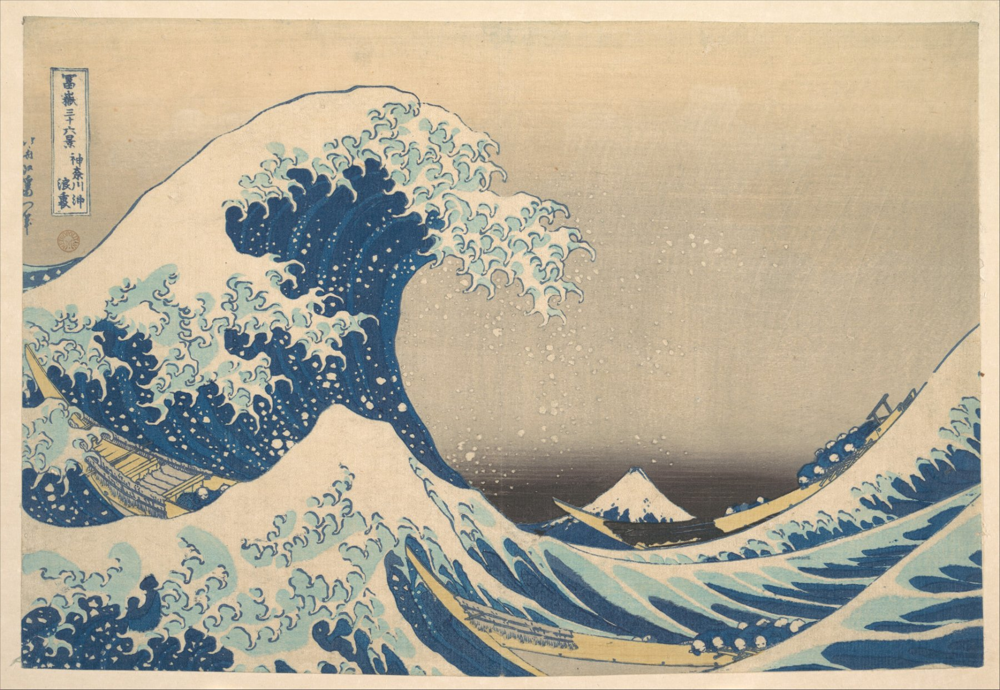
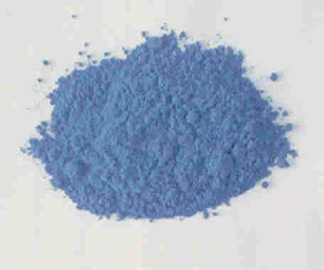

Hokusai: The Great Wave
~11,830 after the ice, or 1830.
Count the boats

You can zoom this image to see it in detail. Once you've zoomed in, you can drag it to see any part you are curious about. You can also tap it to see a magnifier, which you can also drag.
Tap anywhere on the print.
There are three boats in the picture, and they are easy to miss. Tap anywhere on the print and a magnifier appears there.
One boat is under the claws of the wave on the left. One is crossing the middle. One is climbing the swell on the right. Each one holds eight rowers lying flat along their oars, with two more people crouched in the bow. Thirty people, about to be somewhere nobody wants to be.
The small white cone in the middle of the picture, sitting in the trough, is Mount Fuji. It is about eighty kilometres away and nearly four kilometres high. The wave only looks bigger because it is nearer. That is the whole trick of the picture, and Hokusai did it on purpose.
Four men made this
The image is called a woodblock print. Hokusai drew it. He was about seventy.
He did not carve the wood and he did not print the paper. A sheet like this one took four people. The publisher, Nishimuraya Yohachi, paid for the paper, the wood and the wages, and took the risk. Hokusai drew the design in black ink on thin paper. A cutter carved the blocks. A printer pulled the sheets. Only Hokusai's name is on it.
Hokusai changed that name a lot. Over his life he used more than thirty of them. Most artists in Japan changed their names too, though not thirty times. On this sheet he signed himself Hokusai, who is now called Iitsu.
What happened to the drawing
The cutter destroyed Hokusai's drawing. He did that by pasting the drawing face down onto a smooth block of cherry wood, rubbing the back of the paper until it was thin enough to see the lines through, and then cutting the wood away on both sides of every line. When he had finished, the drawing was gone. It had been shaved off along with the wood.
So there is no original of The Great Wave, and there never was one. There was a block, and then there were sheets of paper.
That first block printed the black lines only. Every colour needed a block of its own, cut to fit the lines exactly, and each block carried a pair of notches at its edge, called kentō, so the printer could drop the paper into the same place every single time. A sheet like this one took about ten separate printings.
There was no press. The printer brushed colour onto the wood, laid damp paper on top of it, and rubbed the back of the paper with a baren, a pad of twisted cord in a bamboo sheath. The colours were pigment and water and a little rice paste, not oily ink.
A good printer could pull about two hundred sheets in a day. A set of blocks could give something like eight thousand before the wood gave out.
What it cost
About the price of two helpings of noodles.
This was not a treasure. It was something you bought on the way home. Thousands were printed and nearly all of them were used up, burned, thrown out, or lost in earthquakes. A hundred and eleven sheets from the original blocks have been found and photographed, one at a time, by a conservation scientist at the British Museum. There are certainly a few more in attics.
The country with its door shut
Edo, where this was printed, held more than a million people. It was one of the largest cities in the world, and almost nobody living in it knew that, because for about two hundred years Japan had been closed.
Not sealed. Closed. Foreign ships were turned away, and after 1825 the order was to drive them off by force. Japanese people were not allowed to leave. The one steady gap was a fan-shaped artificial island in Nagasaki harbour called Dejima, roughly a hundred and twenty metres long, where a handful of Dutch traders lived and traded under guard. Chinese ships came into Nagasaki too. Everything that arrived from the rest of the world arrived through that gap.
Including a colour.
The blue
Before this print, a Japanese printmaker who wanted blue had two choices and neither was good.
Indigo came from the leaves of a plant. It is a real, deep blue and it lasts, but it is hard to print evenly and it goes grey when it is thin.
The other was dayflower blue, squeezed out of the petals of a small weed. It is a lovely blue for about a year. Then daylight takes it. Prints that were blue in 1800 are cream-coloured now, and nobody at the time had any idea that was going to happen.
The blue in this wave is neither of those. It is Prussian blue, and it was made by accident in Berlin around 1706 by a paint-maker called Johann Jacob Diesbach, who was trying to make red. That required potash, which is just refined wood ash, but he ran short and borrowed some from a man working in the same building, Johann Konrad Dippel, who had been using it to boil down animal parts. The potash came back with something else in it. Diesbach's red came out blue.
What he had made, with no way at all of knowing it, was a lattice of iron atoms held apart by pairs of carbon and nitrogen — cyanide. It is written Fe4[Fe(CN)6]3. Two kinds of iron sit in that lattice. One of them is missing two of its electrons; the other is missing three of them. Because of this, red light can knock an electron from one kind of iron atom to the other. When that happens, the red light is used up. Red goes in and does not come out, and most of what is left is blue.

Is it poison? Cyanide is a famous poison, and this is real cyanide. But it is locked to the iron so tightly that it cannot get loose, and the blue is harmless. It is so harmless that doctors use it as a medicine: swallow certain radioactive metals by accident and you will be given Prussian blue to swallow after them, and it carries the metal out of you. The colours around it were the deadly ones. The yellow of these boats may be orpiment, which is arsenic. Red often meant mercury, and white meant lead. Painters ground these colours with their hands, and some of them licked their brushes to a point.
People had made a blue in a furnace before — the Egyptians did it, by heating sand and copper and soda together, three thousand years earlier — but the recipe had been lost for well over a thousand years. Every blue in use in 1706 was dug up, grown, or ground from a stone. Prussian blue is the first one anybody made on purpose in a workshop.
For eighteen years the people who made it kept quiet about how. Then in 1724 the recipe was printed in London, in a journal anyone could read, and the secret was over. After that the blue could be made by anybody with iron, potash and boiled blood, and it was — in England, in Holland, in Germany, in barrels. A colour that began as one man's ruined batch of red became something you could order by the pound.
It reached Japan through Dejima. It was expensive, and painters used a little of it. Then, around 1829, cheap Prussian blue began arriving in quantity on Chinese ships, and within a year or two it was all over the print shops in Edo. Hokusai's Fuji series is one of the first places it went. The map below shows the two ways it came.
Nobody wrote down the journey of any one packet of blue, so the dashed lines are guesses. The expensive blue came the Dutch way. A ship from Amsterdam took five or six months to sail round the bottom of Africa to Batavia, the Dutch town that is now Jakarta, and from there one or two Dutch ships a year were let into Nagasaki. The cheap blue came the Chinese way, on junks from Zhapu, a crossing of a week or two. From Nagasaki to Edo was a month or so, by road and boat.
What the colours are made of
You can look at them one at a time. Tap Sample colours, and the print will move down here and get bigger. The magnifier works as it did, but now it also tells you what is under it: the colour, the three numbers your screen is using to make that colour, and its best guess at what that colour was made of.
Guess is the honest word. What you are looking at is a photograph of a two-hundred-year-old sheet of paper, lit by somebody's lamp, pushed through a camera and out onto your screen. And this sheet has changed. The yellows have faded badly. The blue has not, which is the whole point of Prussian blue. So the tool can be fairly confident about a strong blue and much less confident about a pale warm colour, because in this sheet the bare paper and the thinnest grey of the sky have drifted into each other. Where it cannot tell two things apart, it says so instead of picking one.
Afterwards
The blocks are lost. Nobody knows when they were lost, or how, or by whom.
So the hundred-odd sheets that survive are all there is, and hardly any two of them are the same colour any more. The ones that were kept shut in a book still have their yellows. The ones that hung on a wall have had the yellow and the pink pulled out of them by daylight, and are blue and cream, like this one. In every single copy, the wave is the last thing left standing — because of what the wave is made of.
More
The year. The series was being advertised in 1830, and this sheet was probably printed in 1831. The Metropolitan Museum dates it "about 1830–32". Nobody has the receipt.
The name. Hokusai called it Under the Wave off Kanagawa — under, not "the great wave". Kanagawa was a stop on the coast road; it is part of Yokohama now.
The boats. They are oshiokuri-bune, fast boats that carried live fish from the peninsulas south of the bay into the Edo markets. They really did go out in weather like this, because fish that arrived late was worth less.
Is it a real kind of wave? Two people took the question seriously enough to publish a paper on it, one of them a physicist who studies how waves break. Their answer: the shape Hokusai drew, with the foam breaking into fingers, is what a big wave really does when it steepens and plunges over, and this one may be one of the rare huge ones that sailors call a rogue wave.
The sky. The grey is not a flat block of colour. The printer wiped a graded wash across the block by hand, a technique called bokashi, once for every sheet. Which means the sky is slightly different in every copy in the world.
Fuji. It last erupted in December 1707, and the ash fell on Edo. That was a hundred and twenty-three years before this print — close enough that people's great-grandparents had swept it off the roof.
Hokusai kept going. He wrote, at about seventy-five, that nothing he had done before he was seventy was worth anything. He died in 1849, aged eighty-eight, and is said to have asked for another five years, which would have made him a real painter.
Twenty-three years later, American warships came into Edo Bay under steam, and the door came open. You can find that at the right-hand end of the line in Hokusai's World, below.
Two other blues. The glass at Chartres, six hundred years earlier, got its blue from cobalt melted into the glass itself. The Starry Night, sixty years later, has Prussian blue in it too — and Van Gogh owned a stack of Japanese prints.
Hokusai’s World
References
Capucine Korenberg, "The making and evolution of Hokusai's Great Wave", British Museum, 2020. The survey of 111 surviving impressions, the order in which they were printed, and the pigments.
Henry D. Smith II, "Hokusai and the Blue Revolution in Edo Prints", in Hokusai and His Age, ed. John T. Carpenter, Hotei Publishing, 2005. How Prussian blue reached the print shops.
Julyan H. E. Cartwright and Hisami Nakamura, "What kind of a wave is Hokusai's Great wave off Kanagawa?", Notes and Records of the Royal Society, 2009.
The Metropolitan Museum of Art, Under the Wave off Kanagawa, accession JP1847. The sheet reproduced here.
John Woodward, "Praeparatio caerulei Prussiaci", Philosophical Transactions of the Royal Society 33 (1724). The recipe, printed for anyone to read, eighteen years after the accident.
Prussian blue as a medicine: the United States Food and Drug Administration's approval of Prussian blue (Radiogardase) in 2003, for people who have swallowed or breathed in radioactive caesium or thallium.
Egyptian blue: the photograph is from Wikimedia Commons, public domain. Its infrared glow: Giovanni Verri, "The spatially resolved characterisation of Egyptian blue, Han blue and Han purple by photo-induced luminescence digital imaging", Analytical and Bioanalytical Chemistry 394 (2009).
"The Ukiyo-e Woodblock Printing Process", Asian Art Museum, San Francisco. The blocks, the kentō, the baren, and how many sheets a set of blocks would give.